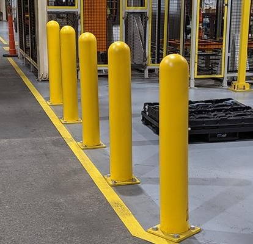

Warehouse Safety Solutions
Protect people, equipment, and inventory with integrated warehouse safety solutions including rack protection, safety netting, loading dock safety, wire mesh systems, and facility-wide impact protection.
Protect People. Protect Your Operation.
A safer warehouse is a more productive warehouse. The right safety infrastructure helps reduce risk, minimize downtime, and protect employees, equipment, and inventory.
Twin Pick Racks helps organizations identify warehouse safety solutions that protect people, equipment, inventory, and facilities while supporting efficient operations and long-term growth.
What We Evaluate
- Forklift traffic patterns, pedestrian walkways, and high-risk impact zones
- Rack system protection, product containment, and falling object hazards
- Loading dock operations, trailer access, and shipping & receiving safety
- Guardrail placement, bollard protection, barriers, and facility infrastructure
- OSHA requirements, workplace safety objectives, and operational risk reduction
- Future warehouse expansion, equipment changes, and long-term safety planning
Building a Safer Warehouse
Every facility presents unique safety challenges. Twin Pick Racks evaluates traffic patterns, storage systems, loading operations, and workplace hazards to identify integrated safety solutions that protect employees, equipment, and inventory while supporting efficient warehouse operations.

Rack Protection Systems
Protect pallet rack uprights and structural components from forklift impacts to reduce repair costs and preserve system integrity.
Best fit: high-traffic warehouse aisles and distribution centers
Guardrails & Pedestrian Barriers
Separate vehicle traffic from pedestrian walkways using heavy-duty guardrail systems that improve workplace safety and reduce accident risks.
Best fit: manufacturing plants and fulfillment centers
Safety Bollards
Protect building columns, door openings, equipment, utilities, and critical infrastructure from accidental vehicle impacts.
Best fit: high-impact areas with frequent vehicle traffic
Wire Mesh Rack Backing & Rack Enclosures
Prevent products from falling into pedestrian aisles while improving inventory containment and meeting facility safety requirements.
Best fit: rack systems adjacent to walkways or workstations
Safety Netting Systems
Contain products and materials within rack systems, mezzanines, and elevated storage to reduce falling-object hazards.
Best fit: high-bay storage and elevated inventory locations
Loading Dock Safety Equipment
Improve dock safety with wheel chocks, dock barriers, vehicle restraints, dock lights, edge protection, and safe loading access.
Best fit: shipping and receiving with frequent trailer traffic
Mezzanine & Elevated Platform Safety
Protect employees working at elevated levels with guardrails, gates, handrails, and fall protection systems.
Best fit: mezzanines, work platforms, and elevated storage
Integrated Warehouse Safety Systems
Combine rack protection, pedestrian barriers, netting, dock safety, and access control into a coordinated safety strategy designed around your facility.
Best fit: facilities seeking comprehensive risk reductionFrom Safety Assessment to an Integrated Warehouse Safety Strategy
We evaluate the way people, equipment, and inventory move through your facility so every recommendation reduces risk without slowing down operations.
Evaluate
Assess forklift traffic, pedestrian walkways, rack systems, loading dock operations, elevated storage areas, and facility-specific safety risks.
Design
Compare rack protection, safety netting, wire mesh systems, guardrails, bollards, dock safety equipment, and containment solutions to create the right safety strategy.
Implement
Coordinate product selection, installation, and system integration to improve workplace safety, protect facility assets, and support long-term warehouse performance.
Ready to Improve Warehouse Safety?
Whether you're protecting pallet rack systems, improving loading dock safety, installing safety netting, or implementing facility-wide impact protection, Twin Pick Racks helps identify integrated warehouse safety solutions that protect employees, equipment, inventory, and your long-term operational success.